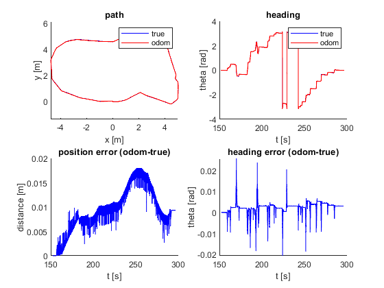
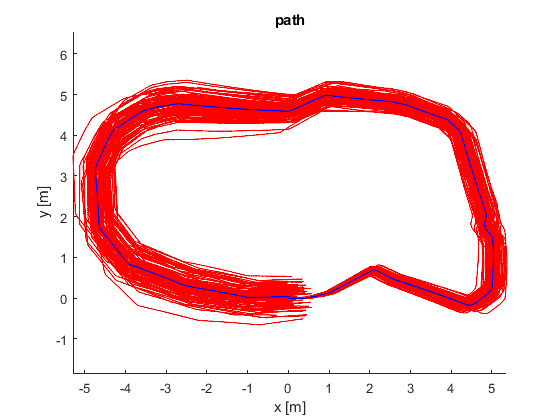
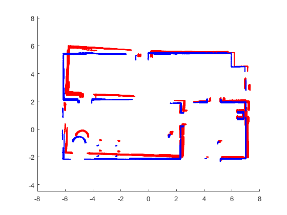

% ====== % ROB521_assignment2.m % ====== % % This assignment will introduce you to the idea of estimating the motion % of a mobile robot using wheel odometry, and then also using that wheel % odometry to make a simple map. It uses a dataset previously gathered in % a mobile robot simulation environment called Gazebo. Watch the video, % 'gazebo.mp4' to visualize what the robot did, what its environment % looks like, and what its sensor stream looks like. % % There are three questions to complete (5 marks each): % % Question 1: code (noise-free) wheel odometry algorithm % Question 2: add noise to data and re-run wheel odometry algorithm % Question 3: build a map from ground truth and noisy wheel odometry % % Fill in the required sections of this script with your code, run it to % generate the requested plots, then paste the plots into a short report % that includes a few comments about what you've observed. Append your % version of this script to the report. Hand in the report as a PDF file. % % requires: basic Matlab, 'ROB521_assignment2_gazebo_data.mat' % % T D Barfoot, December 2015 % clear all; % set random seed for repeatability rng(1); % ========================== % load the dataset from file % ========================== % % ground truth poses: t_true x_true y_true theta_true % odometry measurements: t_odom v_odom omega_odom % laser scans: t_laser y_laser % laser range limits: r_min_laser r_max_laser % laser angle limits: phi_min_laser phi_max_laser % % load gazebo.mat; load ROB521_assignment2_gazebo_data.mat % ====================================================== % Question 1: code (noise-free) wheel odometry algorithm % ====================================================== % % Write an algorithm to estimate the pose of the robot throughout motion % using the wheel odometry data (t_odom, v_odom, omega_odom) and assuming % a differential-drive robot model. Save your estimate in the variables % (x_odom y_odom theta_odom) so that the comparison plots can be generated % below. See the plot 'ass1_q1_soln.png' for what your results should look % like. % variables to store wheel odometry pose estimates numodom = size(t_odom,1); x_odom = zeros(numodom,1); y_odom = zeros(numodom,1); theta_odom = zeros(numodom,1); % set the initial wheel odometry pose to ground truth x_odom(1) = x_true(1); y_odom(1) = y_true(1); theta_odom(1) = theta_true(1); % ------insert your wheel odometry algorithm here------- for i=2:numodom t = t_odom(i) - t_odom(i-1); theta_odom(i) = theta_odom(i-1) + omega_odom(i-1)*t; x_odom(i) = x_odom(i-1) + t * cos(theta_odom(i-1)) * v_odom(i-1); y_odom(i) = y_odom(i-1) + t * sin(theta_odom(i-1)) * v_odom(i-1); end theta_odom = wrapToPi(theta_odom); % ------end of your wheel odometry algorithm------- % plot the results for verification figure(1) clf; subplot(2,2,1); hold on; plot(x_true,y_true,'b'); plot(x_odom, y_odom, 'r'); legend('true', 'odom'); xlabel('x [m]'); ylabel('y [m]'); title('path'); axis equal; subplot(2,2,2); hold on; plot(t_true,theta_true,'b'); plot(t_odom,theta_odom,'r'); legend('true', 'odom'); xlabel('t [s]'); ylabel('theta [rad]'); title('heading'); subplot(2,2,3); hold on; pos_err = zeros(numodom,1); for i=1:numodom pos_err(i) = sqrt((x_odom(i)-x_true(i))^2 + (y_odom(i)-y_true(i))^2); end plot(t_odom,pos_err,'b'); xlabel('t [s]'); ylabel('distance [m]'); title('position error (odom-true)'); subplot(2,2,4); hold on; theta_err = zeros(numodom,1); for i=1:numodom phi = theta_odom(i) - theta_true(i); while phi > pi phi = phi - 2*pi; end while phi < -pi phi = phi + 2*pi; end theta_err(i) = phi; end plot(t_odom,theta_err,'b'); xlabel('t [s]'); ylabel('theta [rad]'); title('heading error (odom-true)'); print -dpng ass1_q1.png
================================================================= Question 2: add noise to data and re-run wheel odometry algorithm =================================================================
Now we're going to deliberately add some noise to the linear and angular velocities to simulate what real wheel odometry is like. Copy your wheel odometry algorithm from above into the indicated place below to see what this does. The below loops 100 times with different random noise. See the plot 'ass1_q2_soln.pdf' for what your results should look like.
% save the original odometry variables for later use v_odom_noisefree = v_odom; omega_odom_noisefree = omega_odom; % set up plot figure(2); clf; hold on; % loop over random trials for n=1:100 % add noise to wheel odometry measurements (yes, on purpose to see effect) v_odom = v_odom_noisefree + 0.2*randn(numodom,1); omega_odom = omega_odom_noisefree + 0.04*randn(numodom,1); % ------insert your wheel odometry algorithm here------- for i=2:numodom t = t_odom(i) - t_odom(i-1); theta_odom(i) = theta_odom(i-1) + omega_odom(i-1)*t; x_odom(i) = x_odom(i-1) + t * cos(theta_odom(i-1)) * v_odom(i-1); y_odom(i) = y_odom(i-1) + t * sin(theta_odom(i-1)) * v_odom(i-1); end theta_odom = wrapToPi(theta_odom); % ------end of your wheel odometry algorithm------- % add the results to the plot plot(x_odom, y_odom, 'r'); end % plot ground truth on top and label plot(x_true,y_true,'b'); xlabel('x [m]'); ylabel('y [m]'); title('path'); axis equal; print -dpng ass1_q2.png
================================================================ Question 3: build a map from noisy and noise-free wheel odometry ================================================================
Now we're going to try to plot all the points from our laser scans in the robot's initial reference frame. This will involve first figuring out how to plot the points in the current frame, then transforming them back to the initial frame and plotting them. Do this for both the ground truth pose (blue) and also the last noisy odometry that you calculated in Question 2 (red). At first even the map based on the ground truth may not look too good. This is because the laser timestamps and odometry timestamps do not line up perfectly and you'll need to interpolate. Even after this, two additional patches will make your map based on ground truth look as crisp as the one in 'ass1_q3_soln.png'. The first patch is to only plot the laser scans if the angular velocity is less than 0.1 rad/s; this is because the timestamp interpolation errors have more of an effect when the robot is turning quickly. The second patch is to account for the fact that the origin of the laser scans is about 10 cm behind the origin of the robot. Once your ground truth map looks crisp, compare it to the one based on the odometry poses, which should be far less crisp, even with the two patches applied.
% set up plot figure(3); clf; hold on; % precalculate some quantities npoints = size(y_laser,2); angles = linspace(phi_min_laser, phi_max_laser,npoints); cos_angles = cos(angles); sin_angles = sin(angles); for n=1:2 if n==1 % interpolate the noisy odometry at the laser timestamps t_interp = linspace(t_odom(1),t_odom(numodom),numodom); x_interp = interp1(t_interp,x_odom,t_laser); y_interp = interp1(t_interp,y_odom,t_laser); theta_interp = interp1(t_interp,theta_odom,t_laser); omega_interp = interp1(t_interp,omega_odom,t_laser); else % interpolate the noise-free odometry at the laser timestamps t_interp = linspace(t_true(1),t_true(numodom),numodom); x_interp = interp1(t_interp,x_true,t_laser); y_interp = interp1(t_interp,y_true,t_laser); theta_interp = interp1(t_interp,theta_true,t_laser); omega_interp = interp1(t_interp,omega_odom,t_laser); end % loop over laser scans for i=1:size(t_laser,1) % ------insert your point transformation algorithm here------ if abs(omega_interp(i)) < 0.1 T = [cos(theta_interp(i)) -sin(theta_interp(i)) x_interp(i); sin(theta_interp(i)) cos(theta_interp(i)) y_interp(i); 0 0 1]; Pr = [(y_laser(i,:) -0.1) .* cos_angles; (y_laser(i,:) -0.1) .* sin_angles; ones(1, length(y_laser(i,:)))]; Pi = T*Pr; if n== 1 scatter(Pi(1,:), Pi(2,:), 1, 'r'); else scatter(Pi(1,:), Pi(2,:), 1, 'b'); end end % ------end of your point transformation algorithm------- end end xlim([-8 8]); axis equal; print -dpng ass1_q3.png